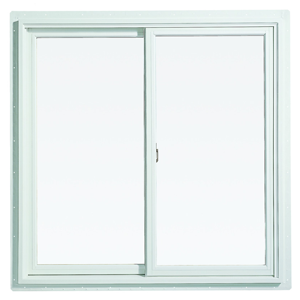
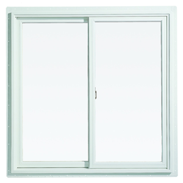

The New School's Parsons School of Design, in collaboration with The Guggenheim Museum, hosts Frank Gehry
At The Parsons Table with Paul Goldberger on Thursday, November 12, 6-8 p.m. in Tishman
Auditorium at The New School University Center, 63 Fifth Ave.
In this intimate, one-on-one conversation, Goldberger, Pulitzer PrizeThe Pulitzer Prize is an award for achievements in newspaper and online journalism, literature, and musical composition in the United States. It was established in 1917 by provisions in the will of American (Hungarian-born) Joseph Pulitzer who had made his fortune as a newspaper publisher, and is administered by Columbia University in New York City. Prizes are awarded yearly in twenty-one categories. In twenty of the categories, each winner receives a certificate and a US$10,000 cash award. The winner in the public service category of the journalism competition is awarded a gold medal. -winning architectural critic and Joseph
Urban Chair in Design and Architecture at Parsons, will engage Gehry on his life and work. Building Art: The
Life and Work of Frank Gehry, Goldberger's recently published full-length biography on Gehry, will be available
for purchase in the lobby of the University Center during the event.
At the Parsons Table is an on-going series of conversational interviews with cultural luminaries hosted by
Goldberger. These conversations provide exclusive insights into the creative process and innovative thinking
of artists, designers, and industry leaders. At the Parsons Table guests have included such icons as Ralph
Lauren, Mickey Drexler, Robert Wong, Frank Gehry , Chuck Close, Bruce Mau, and Donna Karan.
ress are invited to meet with Gehry and Goldberger immediately prior to the event
One of the most inventive and pioneering architects working today, Frank Gehry has designed buildings that
have become world-renowned attractions. His work includes The Disney Concert Hall, home of the Los Angeles
philharmonic, 8 Spruce Street in New York City, the Guggenheim Museum in Bilbao
, Chuck Close, Bruce Mau, and Donna Karan.
ress are invited to meet with Gehry and Goldberger immediately prior to the event
One of the most inventive and pioneering architects working today, Frank Gehry has designed buildings that
have become world-renowned attractions. His work includes The Disney Concert Hall, home of the Los Angeles
philharmonic, 8 Spruce Street in New York City, the Guggenheim Museum in Bilbao , Spain, and the Louis
Vuitton Foundation building in Paris. Recently, Gehry agreed to design the Dwight D. Eisenhower Memorial in
Washington D.C. and to undertake the redesign of the Los Angeles River.
Paul Goldberger is a Pulitzer Prize-winning architectural critic and Joseph Urban Chair in Design and
Architecture at Parsons. From 1997 through 2011, he served as the architecture critic for The New Yorker,
where he wrote the magazine’s celebrated “Sky Line” column. He began his career at The New York Times,
where, in 1984, he earned the Pulitzer Prize for Distinguished Criticism. He is formerly dean of the Parsons
School of Design.
, Spain, and the Louis
Vuitton Foundation building in Paris. Recently, Gehry agreed to design the Dwight D. Eisenhower Memorial in
Washington D.C. and to undertake the redesign of the Los Angeles River.
Paul Goldberger is a Pulitzer Prize-winning architectural critic and Joseph Urban Chair in Design and
Architecture at Parsons. From 1997 through 2011, he served as the architecture critic for The New Yorker,
where he wrote the magazine’s celebrated “Sky Line” column. He began his career at The New York Times,
where, in 1984, he earned the Pulitzer Prize for Distinguished Criticism. He is formerly dean of the Parsons
School of Design.